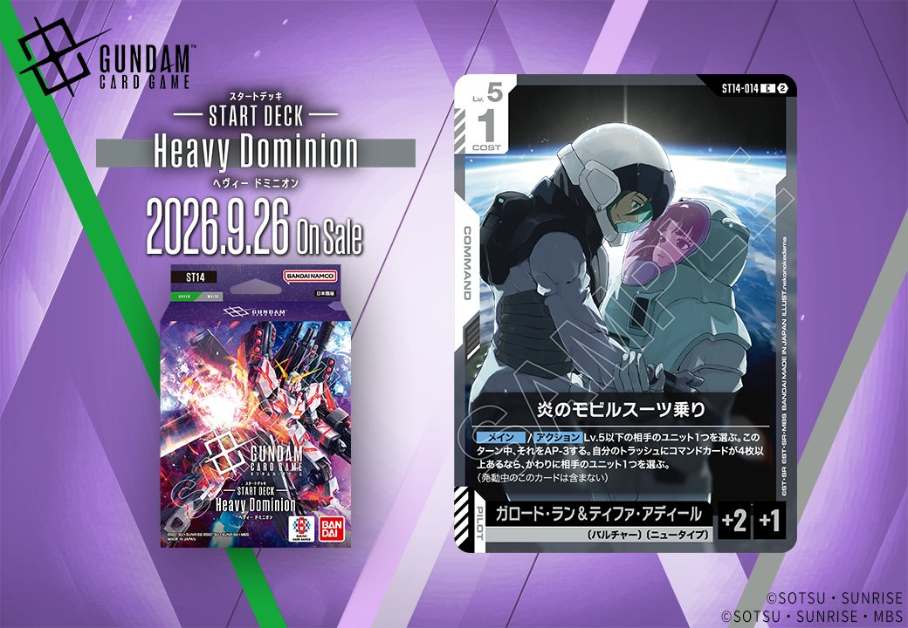

ST14「炎のモビルスーツ乗り」(ST14-014)は、白のCOMMANDとして収録される1枚です。発売日は2026-09-26となっています。

炎のモビルスーツ乗り (ST14-014)
| 色 | 白 | タイプ | COMMAND |
| Lv | 5 | コスト | 1 |
| パイロット | ガロード・ラン&ティファ・アディール（補正 AP+2 / HP+1） 〔バルチャー〕、〔ニュータイプ〕 | ||
効果: メイン/アクション Lv.5以下の相手のユニット1つを選ぶ。このターン中、それをAP-3する。自分のトラッシュにコマンドカードが4枚以上あるなら、かわりに相手のユニット1つを選ぶ。(発動中のこのカードは含まない)
炎のモビルスーツ乗り (ST14-014) はコスト1のコマンドで、通常はLv.5以下の相手ユニット1つをそのターン中AP-3する除去補助だが、自分のトラッシュにコマンドが4枚以上あればLv.制限なく相手ユニット1つを対象にできる点が優秀。溢れる慈愛(GD01-118)で手札を捨てながらトラッシュのコマンドを増やせば、後半には条件達成が現実的になる。 アタック時にAP-3で相手のアタッカーを弱体化させ、ブロッカー持ちのガンダム・ルブリス(GD01-086)やリック・ディアス(GD02-079)と組み合わせれば戦闘での有利を取りやすい。2026-09-26発売で、キラ・ヤマト(ST04-010)のAP-2とあわせて低コストでの戦闘干渉手段となる。
関連カード
-
 溢れる慈愛(GD01-118)白系デッキ内採用率41.9% (2006デッキ)
溢れる慈愛(GD01-118)白系デッキ内採用率41.9% (2006デッキ) -
 ガンダム・ルブリス(GD01-086)白系デッキ内採用率38.2% (1833デッキ)
ガンダム・ルブリス(GD01-086)白系デッキ内採用率38.2% (1833デッキ) -
 エールストライクガンダム(ST04-001)白系デッキ内採用率36% (1724デッキ)
エールストライクガンダム(ST04-001)白系デッキ内採用率36% (1724デッキ) -
 キラ・ヤマト(ST04-010)白系デッキ内採用率35.7% (1711デッキ)
キラ・ヤマト(ST04-010)白系デッキ内採用率35.7% (1711デッキ) -
 リック・ディアス(GD02-079)白系デッキ内採用率30.9% (1481デッキ)
リック・ディアス(GD02-079)白系デッキ内採用率30.9% (1481デッキ)